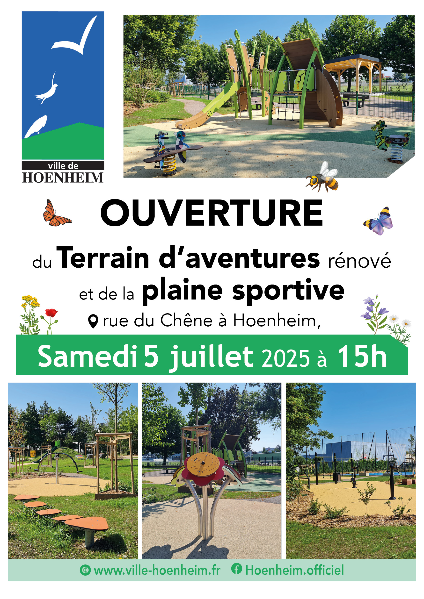

- Cet événement est terminé
Ouverture du Terrain d’aventures et de la plaine sportive – samedi 5 juillet 2025 à 15h
5 juillet 2025 à 15 h 00 min - 18 h 30 min
Navigation de l'événement

La Ville de Hoenheim a le plaisir de vous informer de l’ouverture du terrain d’aventures et de la plaine sportive, situé rue du Chêne à Hoenheim, le samedi 5 juillet 2025 à 15h.
Entièrement réaménagé, cet espace a été pensé pour offrir à tous un lieu de détente, de jeu et de sport dans un cadre agréable et naturel. Il se compose désormais de deux zones distinctes :
Un terrain d’aventures, avec :
- Une aire de jeux pour les enfants de 0 à 5 ans
- Une aire de jeux pour les 5 ans et plus, avec de nombreux jeux ludiques. Une tyrolienne double accessible à tous, y compris aux adultes, pour partager des moments en famille
Une plaine sportive, comprenant :
- Des agrès de fitness en libre accès
- Un terrain de basket modulable (5×5 ou deux terrains 3×3)
- Un city stade pour pratiquer le football ou d’autres jeux collectifs
Cet espace est très végétalisé, avec de nombreux arbres, des végétaux et une prairie fleurie qui favorisent la biodiversité et offrent de belles zones ombragées pour le confort de tous.
Vous pouvez facilement vous y rendre à vélo, trottinette ou vélo cargo : le parking est équipé de places réservées pour ces modes de déplacement doux.
Nous espérons vous retrouver nombreux pour inaugurer et découvrir ce nouvel espace conçu pour tous les âges !